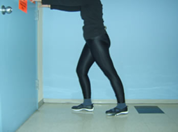
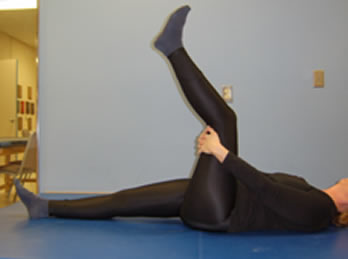
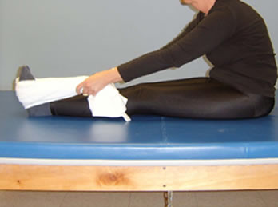
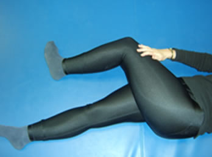
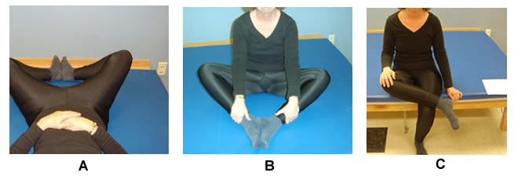
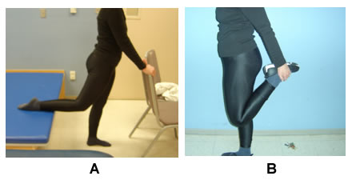

Module: Exercise
Jane Brandenstein, PT, and Janet Poole, PhD, OTR/L
Resources
Range-of-motion exercises: Legs
A quick guide to range-of-motion exercises for the legs.
Printout PDFExercise log
Use this printout to identify an activity, and track goals and frequencies.
Printout PDFParaffin wax treatment
This printout provides instructions for a paraffin wax treatment.
Printout PDFExercises for the legs
Calf Stretches. These may be done standing or sitting.
Standing: put one foot in front of you and the other leg straight behind. Slowly move your hips slightly forward, keeping your back straight. Remember to keep your heel on the floor and toes pointing straight ahead. There are two large muscles in the calf, one that is stretched with the knee straight (gastrocnemius) and one that is stretched with the knee bent (soleus).
Hip Stretches
The photos show the goal. It may take a long time to reach the goal. Remember to start where you are and move slowly.
For the hamstring muscle (the big muscle over your buttocks), stretches are best done on your back, but they can also be done in a sitting position.
While on your back, hold one leg behind the knee. Bring the leg toward your chest, trying to keep the knee straight, and push the heel toward the ceiling.
Sitting on the bed, reach forward toward your feet, and try to keep your back straight. You can loop a towel around your feet to help you stretch and keep your back straight.
While sitting, move to the edge of the chair. Straighten your legs, keeping your back straight, and bend at the hips. This is not so easily done on the floor.
Outer Thigh
On your back, cross the left leg over the right leg as high as your hips allow. Keep both buttocks on the floor. Use the thigh for pressure, not your knee. This may also be done while sitting.
Inner Thigh
On your back (A) or in a sitting position on the floor (B), put the bottom of both feet together and let your knees fall down toward the bed or mat. Or sit on the edge of a bed and cross one leg over the other, with the hip rotating out (C).
Front of Thigh
(A) Stand with your right foot on a step, bed, or stool, and hold on to a chair. Keeping your left foot flat on the floor, lean forward toward the left foot. You will feel a stretch in the left front of thigh on the other (right) side. Switch sides. Or (B) hold on to a chair, table, or wall, bend one knee, hold on to the ankle, and try to pull the foot back behind your body.
References:
- Anderson, B. (2000). Stretching. Bolinas, CA: Shelter Publications.
- Stark, S. C. (1997). The Stark reality of stretching. Richmond, Canada: The Stark Reality Corp.